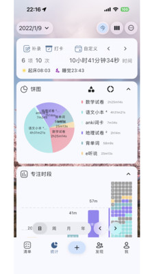
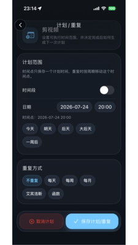

Ticking 用了一年才发现，这五个隐藏功能官方居然没说
你以为 Ticking 就是个番茄钟？锁机分三档、两个平均时长、双指捏合切视图——这些藏得真深的功能，翻遍设置才挖出来。
之前只在ticking官网看过一眼介绍，没太当回事。我把 Ticking 设置翻了三个晚上，才发现这款计时器藏着不少「大多数人不知道它还能这样」的东西。
说实话之前我对它的认知很扁平：番茄钟 + 待办 + 统计，和市面上其他专注计时应用差别不大。直到有一天期末复盘，我在统计页盯着两个平均时长看了五分钟，然后发现锁机不止一种模式，接着又摸索出双指捏合切换视图——那天晚上我把设置菜单每个子项都点了一遍，像翻藏宝图一样。
锁机不止一档，大多数人只用了免费版的基础档
锁机功能大家都知道，但很少有人注意到它分了三个档位，而且后两档是会员专属的。我用了大半年一直停在第一档——计时时全屏显示时钟，可以暂停、结束、调白噪音，但其他应用照样能打开，通知也不屏蔽。说白了就是个「视觉提醒」，真要刷手机还是拦不住。
第二档叫「定时锁机」，可以预设每天几点几分自动启动锁机计时。比如你每天下午两点开始刷考研真题，设好之后到点它自动进入锁机状态，完全不用你手动开计时也不用摸手机。锁机期间其他应用彻底打不开，连下拉通知栏都屏蔽。
第三档是更严格的锁机模式——2.0 大版本升级时加的，官方下载页也没怎么提。除了普通锁机，它还会禁用部分系统级操作，比如长按电源键、下拉快捷设置。结束计时需要输入密码或者生物识别验证。我第一次开这个档位的时候，试着按电源键重启逃出去，结果发现根本没反应——还挺有用的，治好了我锁机时想重启刷五分钟手机的坏毛病。

净平均时长 vs 普通平均，两个平均数藏了专注质量的秘密
统计页里有两个平均数并排放着，我之前一直没搞懂为什么要放两个。普通平均时长很好理解——选中日期范围内每一天的专注时长加总，除以天数就行。但净平均时长的分母不一样，它只算「有计时行为的那些天」。
举个真实的例子：最近 14 天里，有 10 天分别专注了 4 小时，4 天完全没计时。普通平均是 (4×10 + 0×4) / 14 ≈ 2.86 小时，看着挺惨的，好像每天都没学够。但净平均是 (4×10) / 10 = 4 小时——真正专注的那些天，每天其实都保持了 4 小时的质量。
这两个数字放一起能直接读出四种状态：普通平均低但净平均高，说明天数不够但质量还行，应该先解决「坚持每天开计时」；两个都高就是状态好；两个都低说明得调整策略了；普通平均高但净平均低——天数够但每天都很短，应该想办法提高单次专注时长。
这个功能是 2.1.5 版本加的，背景也挺有意思：用户反馈说「连续几天没专注，把平均时长拉得太低，看着不舒服」，Ticking 团队就把质量和频率两个维度拆开了。我后来期末复盘的时候就盯着这两个数字看，比只看普通平均要诚实得多。
双指捏合切视图，手势控制日/周/月/年
统计页和待办页面的视图粒度切换，大多数人是点顶部的「日 / 周 / 月 / 年」按钮。但其实它支持手势控制——双指捏合可以从周视图缩到月视图，双指展开可以从月视图放大到周视图。
这个功能藏得真深，我在设置里翻了好久才偶然在 iPad 上试出来的。屏幕越大体验越好，iPad 上双指捏合从年视图一路缩到周视图，整个切换过程很流畅，比点按钮方便多了。
年视图还是会员独享的——具体规则在ticking文档里有详细说明。把全年 365 天按热力密度展示成一张长条形图，12 个月横向排开，每天一个小格，颜色代表专注时长。年末的时候打开它，一眼就能看到哪几个月最用功、哪几个月在摆烂。免费版只显示最近 30 天的热力图。

自由计时也能锁机了，填补了两年的空白
之前只有番茄钟才能用完整的锁机功能，自由计时只能停留在「仅计时界面」的基础档。这意味着如果你想不开番茄钟、就自然地计时，同时又想锁机强制断网——做不到。
2.2.5 版本把这个缺口填上了。现在自由计时也能选择完整的锁机档位，开启后手机被锁死，想结束计时必须验证密码或生物识别。这个更新没有在版本更新日志里大张旗鼓地写，我是在更新后偶然试自由计时锁机的时候才发现的。对于那些不喜欢被番茄钟的节奏框住、想自然计时但又需要强制断网的人来说，这个更新比任何新功能都实用。
一个要踩的坑：锁机 + 屏幕常亮 + 白噪音 = 烫手山芋
挖了四个有用的，也说一个容易忽略的坑。Ticking 本身逻辑很轻，但锁机、屏幕常亮、白噪音三件事同时开的时候会出现组合耗电问题。锁机模式需要持续运行前台服务防止被系统杀掉；屏幕常亮默认开启；白噪音是持续播放的音频流。三件套叠加之后，计时一小时掉电一半不是开玩笑。
iPad 上这个问题更严重——屏幕大，常亮耗电更多。App Store 上有用户专门留了长评吐槽这件事。
官方目前没有专门的耗电优化，但有几个实用的缓解方案：计时设置里把「屏幕常亮」关掉，屏幕会正常熄灭但后台计时不中断；白噪音设 30 分钟自动关闭而不是随计时时长；如果只是前 30 分钟需要强制专注，把锁机设成 30 分钟自动解除。正常使用（不锁机、不开屏幕常亮、白噪音开 30 分钟）下每小时耗电应该在 5%-15% 之间，超过 30% 就要检查是不是三件事同时开了。
把它用透
用了一年 Ticking 才发现这些，说真的有点惭愧。很多人对工具的认知停留在「能完成基本功能」就满足了，但把一个工具翻到底，挖那些官方不宣传、藏在二级菜单里的功能，其实是一件挺有意思的事。Ticking 不是那种功能堆砌的大杂烩应用，它的隐藏功能不多，但每挖一个都能解决一个真实的小痛点。
资料同步在三个仓库都能拿到——GitHub上有完整的文档目录，Gitee方便国内用户镜像访问，GitCode作为第三份备份确保不会丢。